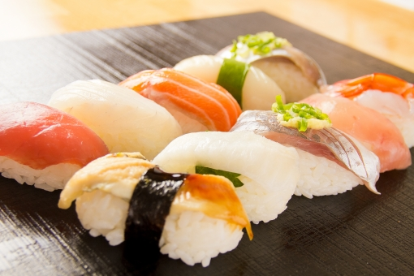

Sushi
Sushi is raw fish on vinegared rice. Now, we have several types of sushi, such as Nigiri, Chirashi, maki, handroll and so on.

Sushi is raw fish on vinegared rice. Now, we have several types of sushi, such as Nigiri, Chirashi, maki, handroll and so on.
Yakiniku means grilled meat. It's called Japanese-style BBQ or Korean-style BBQ. It’s common to use beef for yakiniku.
Okonomiyaki is Japanese-style pancake made from eggs, flour, water and shredded cabbage with many kind of toppings.